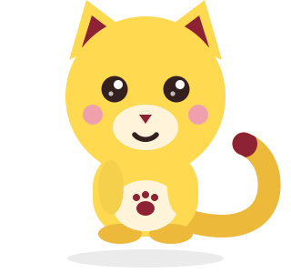

Grammar Hub berjenjang
139 lesson dari A1 sampai C2, tiap lesson 25 soal latihan terfokus, terbuka bertahap lewat prasyarat.
- A1 17
- A2 17
- B1 47
- B2 32
- C1 19
- C2 7

Gratis, tanpa langganan
FIEZEL menyatukan grammar, kosakata, reading, speaking, dan listening dalam satu aplikasi yang menyesuaikan soal dengan jawabanmu. Semuanya dipetakan ke tingkat CEFR A1–C2 dan bisa kamu pakai tanpa biaya.
Tanpa akun. Progres belajarmu tersimpan di perangkatmu sendiri.


FIEZEL adalah ruang belajar bahasa Inggris personal: satu aplikasi berisi 139 grammar lesson, 1.765 kosakata, 300 bacaan berjenjang dengan 1.500 soal membaca, 36 sesi speaking, dan latihan listening. Materinya dipetakan ke tingkat CEFR A1–C2, jadi kamu bisa mulai dari level yang benar-benar sesuai.
Cocok untuk pelajar, mahasiswa, dan siapa pun yang ingin belajar rutin tanpa kelas dan tanpa biaya: gratis, tanpa langganan, tanpa akun. Aplikasinya bisa dipasang ke layar utama seperti aplikasi biasa, dan menyesuaikan soal berikutnya dari jawabanmu.


139 lesson dari A1 sampai C2, tiap lesson 25 soal latihan terfokus, terbuka bertahap lewat prasyarat.
300 bacaan berjenjang dengan 1.500 soal membaca, dari teks pendek pemula sampai bacaan panjang tingkat lanjut.
Bank kosakata bertingkat untuk dilatih berulang, tersusun mengikuti tingkat CEFR yang sedang kamu kerjakan.
36 sesi speaking plus latihan listening dengan bank soal dan enam format ujian bergaya IELTS dan TOEFL. Audionya TTS dari skrip orisinal, bukan rekaman ujian asli.
PAW punya 14 ekspresi yang bereaksi ke jawabanmu: penasaran, memberi petunjuk, ikut senang, ikut bingung.
Aplikasi membaca pola jawabanmu, lalu menyesuaikan soal dan pengulangan berikutnya supaya latihan tidak terlalu mudah.
Pasang ke Home Screen seperti aplikasi biasa. Setelah terpasang, materi dan latihan bisa dibuka tanpa internet.
Suara perangkat aktif sejak awal. Suara neural diunduh sekali dan butuh jaringan saat mengunduh dan memakainya pertama kali.
Buka aplikasi FIEZEL langsung dari browser, tanpa daftar akun.
Pilih tingkat CEFR yang paling dekat dengan kemampuanmu sekarang.
Kerjakan lesson beserta 25 soal latihannya sampai tuntas.
Progres tersimpan otomatis di perangkatmu, siap dilanjutkan besok.
FIEZEL bisa dipasang ke layar utama lewat menu browser, tanpa toko aplikasi. Materi dan latihan bisa dibuka tanpa internet. Suara neural dan tutor AI butuh jaringan.

Ya. Gratis, tanpa langganan. Tidak ada paket premium, tidak ada fitur yang dikunci di balik pembayaran. Seluruh 139 grammar lesson, 1.765 kosakata, dan 300 bacaan bisa kamu buka sejak hari pertama.
Tidak perlu. Kamu bisa langsung belajar. Karena tidak ada akun, progresmu tersimpan di perangkat yang kamu pakai — kalau berpindah ke perangkat lain, kamu mulai dari awal lagi.
Setelah FIEZEL terpasang ke layar utama: materi dan latihan bisa dibuka tanpa internet. Suara neural dan tutor AI butuh jaringan. Jadi belajar teks dan soal tetap jalan, sedangkan fitur suara neural dan tutor menunggu koneksi.
Ya, keduanya. Di Android pakai Chrome lewat menu ⋮. Di iPhone wajib pakai Safari lewat tombol Bagikan, karena hanya Safari yang bisa menambahkan aplikasi web ke Layar Utama iOS. Desktop Chrome dan Edge juga bisa.
Tidak. Materi FIEZEL dipetakan ke tingkat CEFR A1–C2 sebagai acuan tingkat kesulitan. Itu bukan sertifikasi, bukan afiliasi, dan bukan pengakuan resmi dari lembaga mana pun. Hasil belajarmu di sini tidak berlaku sebagai sertifikat.
Ada. Suara bawaan perangkatmu dipakai sejak awal, dan suara neural tersedia sebagai pilihan tambahan yang diunduh sekali. Audio latihan ujian adalah TTS dari skrip orisinal, bukan rekaman ujian asli.
Catatan belajarmu — lesson yang selesai, jawaban, dan progres level — tersimpan lokal di perangkatmu. Kami tidak meminta nama, email, atau nomor telepon untuk mulai belajar. Menghapus data browser berarti menghapus progres itu juga.
Setiap grammar lesson punya 25 soal latihan terfokus, dari total 139 lesson (A1 17 · A2 17 · B1 47 · B2 32 · C1 19 · C2 7). Reading menambah 1.500 soal membaca di 300 bacaan berjenjang.
Buka FIEZEL, pilih tingkatmu, dan kerjakan satu lesson — gratis, tanpa langganan, tanpa akun.